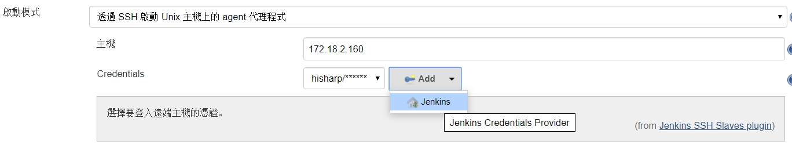
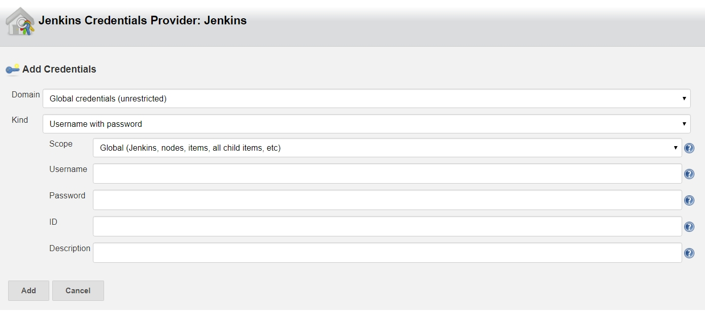

前言
目前因為有是使用Angular來開發，因為要上傳建制好的web資料到web服務器上，所以來使用Jenkins，目前主要的建置機器是我的win10，而測試的機器是Ubuntu的機器，所以要在我的win10上建置好之後上傳到測試的linux下，來進行測試。基本流程如下
graph TD;
win10端 --> 取出專案;
取出專案 --> 建置;
建置-->刪除;
刪除-->複制;
複制-->壓縮;
壓縮-->上傳;
linux端 --> 解壓zip;
解壓zip --> 刪除nginx;
刪除nginx --> 複制到nginx;
複制到nginx --> 刪除zip;
安裝
直接到官網來下載windows版，之前有文章 記錄CI-Server的使用 可以參考一下
安裝plugin
NodeJS
安裝 Slave Node
因為要來控制linux所以要來安裝相關的套件
安裝Java
1
2
| sudo apt install software-properties-common apt-transport-https -y
sudo add-apt-repository ppa:openjdk-r/ppa -y
|
安裝 java OpenJDK
1
| sudo apt install openjdk-8-jdk -y
|
建立使用者
因為我的設定比較單純，加入一個使用者到這台linux，並可以使用sudo的指令
加到admin的群組
1
| sudo usermod -aG sudo jenkins
|
設定jenkins
因為在使用上，需要將jenkins設定在使用sudo時不輸入密碼，所以需要來設定一下
會打開/etc/sudoers
在最下面加入
1
| jenkins ALL=(ALL) NOPASSWD: ALL
|
按下Ctrol+O, 離開按下Ctrl+X
設定節點(node)
在設定節點上，主要是要有名稱和使用者的帳密，這樣才可以登入到linux來使用bash
在節點上可以來增加一個使用者，來登入linux

選擇Add->Jenkins會跳出下面的畫面

輸入需要的帳號和密碼
本地化
在Jenkins的管理介面，要使用外掛的程式Locale plugin, 然後在Jenkins的管理的Local的標加入zh_TW, 並將下面的Ignore browser preference and force this language to all users就會是中文的顯示
Pipleline
切換目錄
1
2
3
4
5
6
7
8
9
10
11
12
13
14
15
16
17
18
19
20
21
22
23
24
25
26
27
28
29
30
31
32
33
34
35
36
37
38
39
40
41
42
43
44
45
46
47
48
49
50
51
52
53
54
55
56
57
58
59
60
61
62
63
64
65
66
67
68
69
70
71
72
73
74
75
76
77
78
79
80
81
82
83
84
85
86
87
88
89
90
91
92
93
94
95
96
97
98
99
100
101
102
103
104
105
106
107
|
import java.text.SimpleDateFormat
def dateFormat = new SimpleDateFormat("yyyyMMddHHmm")
def date = new Date()
def usedate=dateFormat.format(date)
def zipfile='201911151521.zip'
def host="172.18.2.160"
def hostaccount="jenkins"
def hostpw="jenkins"
def hostpath="/home/jenkins/"
node('master') {
def winrar = "\"C:/Program Files/WinRAR/WinRAR.exe\""
def winparam = "a -afzip -ep1"
def pscp ="D:/tools/Putty/pscp.exe"
def buildNumber = env.BUILD_NUMBER
def workspace = env.WORKSPACE
def buildUrl = env.BUILD_URL
def prjdir = env.WORKSPACE+"/asaweb/"
def desdir = "D:/Project/hisharp/server.hs"
stage('win10正式版-取出專案'){
'echo 取出 dev';
checkout([$class: 'GitSCM', branches: [[name: '*/master']], doGenerateSubmoduleConfigurations: false, extensions: [], submoduleCfg: [], userRemoteConfigs: [[credentialsId: 'ee264d46-xxxx-xxxx-xxxx-af57c243c6ae', url: 'http://172.18.18.18/ttom/ASAWebUI.git']]]);
dir("${prjdir}"){
bat 'npm install'
}
}
stage('建置'){
dir("${prjdir}"){
bat "npm run build:qa ";
}
stage('刪除'){
dir("${desdir}"){
bat "rd /s /q \"html\" "
bat "md \"html\" "
}
}
stage('複制'){
dir("${prjdir}dist"){
bat "xcopy \"${prjdir}dist/asaweb\" \"${desdir}/html\" /S "
}
}
}
stage("壓縮"){
zipfile=usedate +'.zip'
bat "echo ${zipfile}"
bat "${winrar} ${winparam} ${zipfile} \"${desdir}/html/*.*\" -r "
}
stage("上傳"){
bat "echo y | \"${pscp}\" -pw ${hostpw} \"${workspace}/${zipfile}\" ${hostaccount}@${host}:${hostpath} "
bat "del \"${workspace}\\${zipfile}\""
}
}
node('160') {
def zipdest="/html"
stage('解壓zip'){
sh 'pwd'
sh """
#!/bin/bash
unzip -o ${hostpath}/${zipfile} -d ${env.WORKSPACE}${zipdest}
"""
}
stage('刪除nginx'){
sh """
#!/bin/bash
sudo rm -rf /usr/share/nginx/html/*.js
sudo rm -rf /usr/share/nginx/html/*.css
sudo rm -rf /usr/share/nginx/html/*.ttf
sudo rm -rf /usr/share/nginx/html/*.html
sudo rm -rf /usr/share/nginx/html/*.eot
sudo rm -rf /usr/share/nginx/html/*.woff
sudo rm -rf /usr/share/nginx/html/*.woff2
sudo rm -rf /usr/share/nginx/html/*.svg
sudo rm -rf /usr/share/nginx/html/*.ico
"""
}
stage('複制到nginx'){
sh """
sudo cp -Rf ${env.WORKSPACE}${zipdest}/* /usr/share/nginx/html/
"""
}
stage('刪除zip'){
sh """
sudo rm -rf ${env.WORKSPACE}${zipdest}/
sudo rm -rf ${hostpath}/${zipfile}
"""
}
}
|
參考資料
ng build command not working in jenkins pipeline
30 天入門 Ansible 及 Jenkins 2018
How to Setup Jenkins Master and Slave on Ubuntu 18.04 LTS
How to create sudo user on Ubuntu 18.04 Bionic Beaver Linux